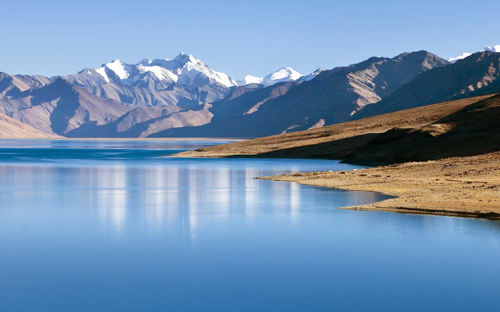
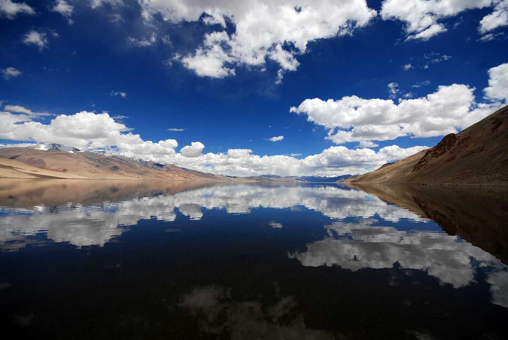

Ladakh

The w3-animate-fading class animates an element in and out (takes about 10 seconds).



A land like no other with superabundance of attractions to visit and phantasmagoric and fabulous landscapes, amazing people and culture, Ladakh is truly a heaven on Earth. Bounded by two of the world's mightiest mountain ranges, the Great Himalaya and the Karakoram, it lies athwart two other, the Ladakh range and the Zanskar range. Ladakh is mystical in all the spheres it covers, from nature, geography, sceneries to the modest cultures that it fosters. Right from gompas to the sensational momos, the superabundance of attractions to visit makes this city make it heaven on earth. It is said that only in Ladakh can a man sitting in the sun with his feet in the shade suffer from sunstroke and frostbite at the same time.
Commuting Within Ladakh
The mystic and awe striking region of Ladakh is surrounded with gorgeous scenery and travelling through this region can indeed be a pleasure. There are buses, taxis, motorcycles and bicycles available for getting across Ladakh and you can choose the one that you deem fit.
Itinerary
Day 1: Arrive at Leh in the morning by flight or road. Head towards your hotel. The place is at an altitude of 14000m above sea level, so an entire day is required to just acclimatize to the weather and steady your heads. Spend the night visiting some local shops nearby the city of Leh or just relax in your hotel rooms.
Day 2: Head out to the city of Leh for some sightseeing at places in close vicinity. Witness sights such as the palatial towns of Shey and Thiksey and its monasteries, the Sindhu Ghat, Druk Padma Karpo, popularly known as ?Rancho's school? and so on. Visit the Shanti Stupa in the evening overlooking the city and the Leh market for shopping.
Day 3: Head to Nubra Valley from Leh, which is a tough yet majestic five-hour journey through the Khardung-La, one the highest motorable roads in the world. Go to the Samstaling Monastery that is beautifully adorned in shades of gold, red and white. Alternatively, you can opt for the Sumur sand dunes for a camel ride.
Day 4: After spending the night in Nubra Valley, head to Leh again. En route, visit the Diskit Monastery and the barren expanse of Hunder Sand Dunes for yet another camel safari if you wish. Reach Leh in the evening and spend some leisure time at your hotel.
Day 5: Head to Pangong Lake from Leh early morning. This too is an enduring 5-hour journey by road. The journey will be through the Changla Pass. Arriving the lakeside, get mesmerized by the enchanting beauty of the lake and its backdrop. Spend the night in the tents near the lake and enjoy a bonfire with your friends.
Day 6: Say bye to the heaven on Earth and take a load of memories back as you head to the airport to catch your flight or go to any other destination in your vehicle.
The perfect getaway for an adventure ride!
For someone who thrives on adventure and lives his life on the edge, Ladakh is their Mecca. There's nothing more satisfying than traversing such high peaks with nothing but daunting yet majestic snow clad mountains in the backdrop. Every minute you spend here becomes a memory. From bike riders to cycling enthusiasts, this is the place to test your endurance and skill. For those who aren't afraid of the water, do not miss the river rafting in Zanskar river at the confluence of Indus and Zanskar. The price per person is around INR 1000 for the long-distance rafting. This is an absolutely unforgettable experience for people who seek thrills. The largest city in this region is Leh and although this city has many monasteries, visit nearby cities like Nubra Valley, Pulu for magnificent views of the scenic beauty. Visit one of the highest motorable roads in the world- Khardung La while on your journey to the Nubra Valley.